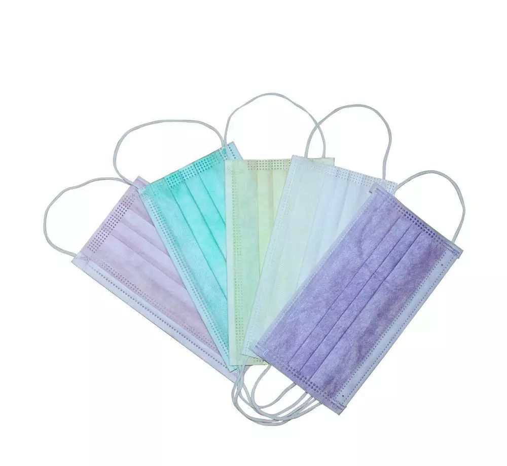
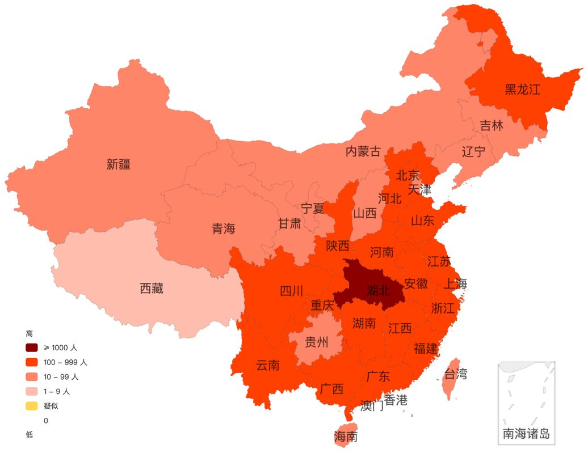
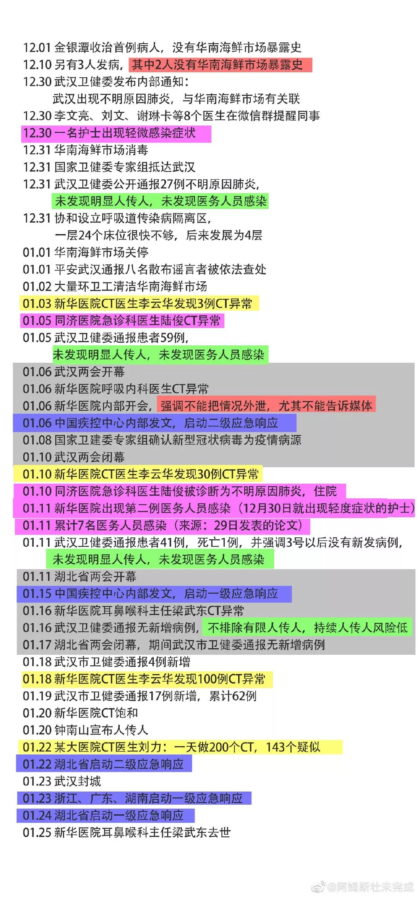
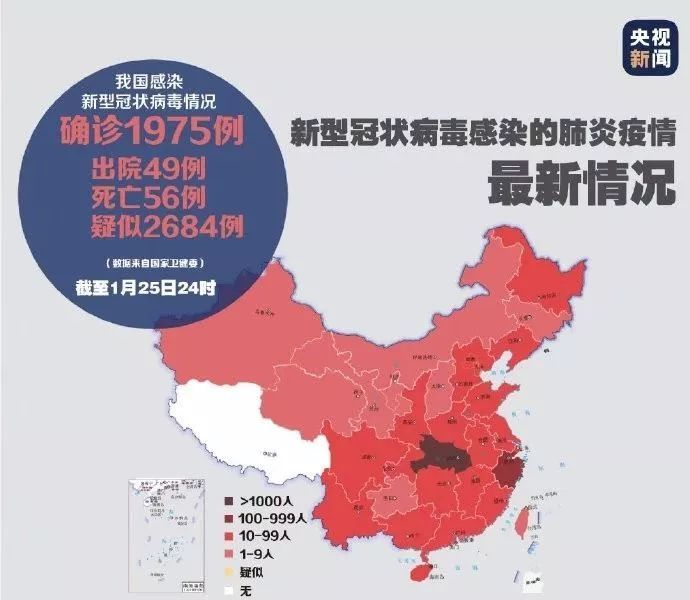
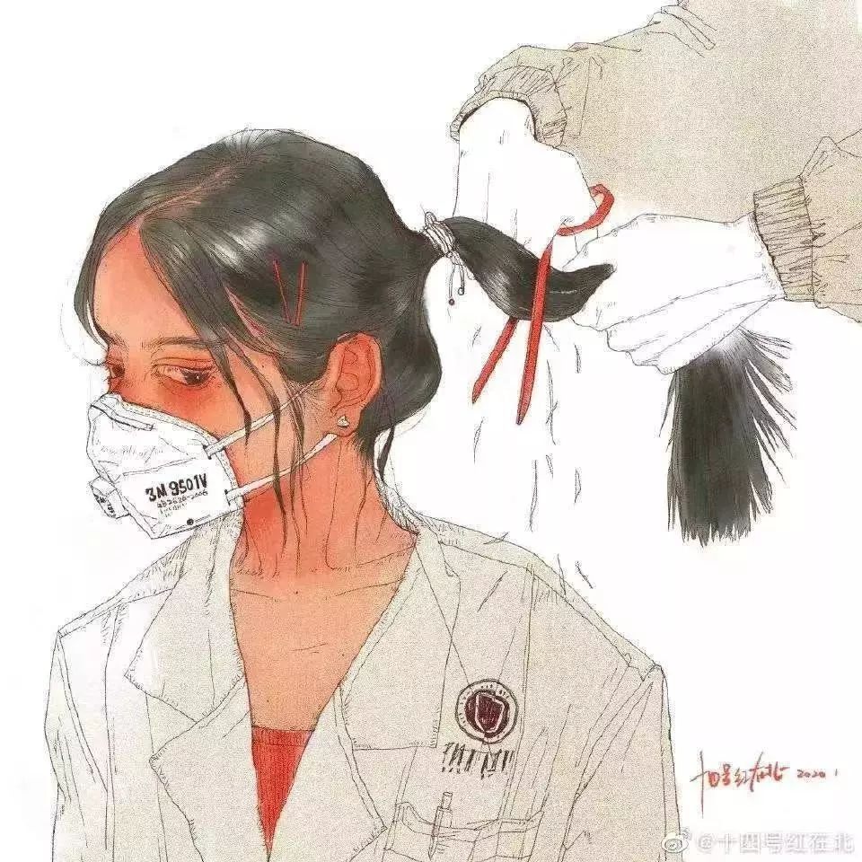

封城一周，湖北人过得怎么样丨单读
原文链接 备份链接 封城已过去一周，在这个谈武汉人、湖北人色变的时候，我们想要好好看一看他们。今天我们挑选的几篇读者来稿，围绕着湖北的武汉和黄冈，讲述他们在旋涡和风暴中心的日子。他们有些住在城市，有些住在乡村和小镇。环境的不同给了他们不 …


前言
2003年的非典，我在武汉读书，每天两点一线地简单生活，虽然也看看新闻报道，但那时的网络并不发达，信息量很少，武汉感染的人也很少，所以真的没有什么感觉。
2020年的肺炎疫情，爆发在我生活了将近20年的武汉——这座有着1000多万人口的城市。
武汉封城、市内机动车禁行、物价飞涨、医疗物资奇缺、医院患者爆满、一床难求、医护人员的各种绝望、武汉市政府机关的各种不作为……，各种真假信息每天排山倒海般地袭来，让人感到窒息。
从经历了最初的震惊、恐慌、担心、绝望到目前逐渐平静，每天早晚刷刷手机，看看各种真真假假的信息，其他时间就是陪孩子玩一会儿，做做家务，然后工作一会儿，日子就这样一天天流淌……，作为平民老百姓，只能严格执行政府的要求，闭关在家，不给政府添乱，但其实内心每天都很煎熬，掰着手指记录每天是封城的第几天。
直到今天，远在广州的姐姐跟我说可以写点什么，记录一下这些天的真实感受。我想也是，虽然到目前为止，我和我的家人非常幸运地没有任何身体不适，但谁都没有置身事外，这也许是我这一生中经历的最刻骨铭心的事，是应该记录下来。
武汉日记
作者：杨甸


右上图为“新型肺炎实时疫情地图”
（截止到2020年2月5日14时09分）
1
月
18
日
我永远记得这一天。
这天我们公司召开为期两天的集团年会。从元旦过后，我就一直加班，没有休息过一天，就是为了准备集团年会需要的各种数据资料。年会的召开，意味着阶段性工作的结束，终于可以休息一下，这是多么开心的事情啊。但在上午会议快要结束时，集团的一位副总裁在汇报工作后，突然对大家说起武汉的“不明肺炎”事件，他告诉大家，这个“不明肺炎”绝不是官方通报的这种情况，实际情况要严重得多，要大家高度重视，做好防护，纸是包不住火的。我当时就愣住了，赶紧向坐在我旁边的一位同事求证，她老公是省疾控中心的。她默默地点头，然后低声对我说，他老公因工作需要去了金银潭医院，现在已经被隔离了，同去的同事有1人被感染，病毒传染性非常强，但不能对外说。听了她的话，我无比震惊，完全有一种被欺骗的感觉！因为从12月下旬就有各种小道消息，说是汉口出现了类似SASR的不明病毒。当时我们还是非常重视的，家里备了一些口罩，出去乘坐公共交通我都会给孩子带口罩。但直到元月初，官方才出现了一些报道，且内容与小道消息有很大出入，且还对“造谣”的人进行了处罚，大家就放松了警惕。加之年底各种大型活动照常进行，我们就完全放松了。现在听闻我简直当头一棒，马上发微信给老公，让他不要再去医院（老公因为工作原因经常要去医院）。晚上回到家，我将我了解的信息告诉了老公，他不以为然，说不要紧张，没那么吓人，他看到医院的医生都跟往常一样。
“
1月19号
我们还在继续开会。想想还是觉得不对劲，我赶紧在网上下单买了5包医用外科口罩，快递很快就直接送到开会的会场。晚上回家比较早，正好碰上每天要坐公交车回家的父母，我赶紧给了他们一些口罩，说了下“不明肺炎”的事情，让他们坐公交车必须戴上口罩。老公也很快回家了，一进门就跟我说事情有点不对劲，今天他在医院看到很多医护人员全副武装，穿着防化服，看着很吓人。我再次强调了我所了解的情况，他还是有点半信半疑，说这种事情政府不可能隐瞒，不然会出大事的。
”
1
月
20
日
回公司上班，一进办公室就看见同事们围在一起说这个“肺炎”的事情，当天武汉对外通报增加了不少病例，且措辞有所变化。我将我知道的情况对他们说了，让他们立刻下楼去最近的药店买口罩、奥司他韦、莲花清瘟等备用药品。办公室的几位同事半信半疑地去了，一会就拿着一大包东西上来了，说药店东西多得很。我无话可说，大家的意识还是不强。不过到了中午，各种信息已经开始铺天盖地地袭来。吃过午饭，办公室的同事才觉得口罩买少了，说再去买一点，但很快就回来了，说药店没口罩了，连药品都没了，还后悔早上没多买一点。形势严峻起来，我们当机立断取消了已经订好的晚上部门聚餐。晚上跟老公说起春节的安排，一个月前我们已经订好了回老公老家往返的火车票，多年没回去过年，我们很早就定下来今年带娃回去过年，也早早准备了各种礼物。我说现在这个情况比较严重，你最好跟你家人沟通一下，看他们是否介意，如果回去传染了病毒那就比较尴尬了。老公听了很是生气，说根本就不存在，我们又没生病，而且即使生病了哪有父母嫌弃自己的孩子的？我无言以对……
“
1月21日
我们最后一天上班，这时已经有很多外地同事提前休假回家了。而这时已经有很多关于肺炎的信息出来了，新增病例开始激增，特别是20日晚上钟南山院士首次对外肯定了病毒会“人传人”的信息。形势变得不容乐观，我想了想，还是直接联系了老公的姐姐，说了武汉目前的疫情情况，乘坐公共交通的风险，也让他们商量商量，慎重考虑一下是否能接受我们回去？下午回到家，老公铁青着脸坐在沙发上，看到我就阴阳怪气地说，他家里人按照我的指示精神打电话给他，叫我们不要回去了。我虽然理解他一心想回家过年的心情，但也是怒火中烧，人不能太自私，回去坐火车风险好大，还带着一个9岁的孩子，而且回去了家里人的风险也大。我给他讲道理，但他听不进去，总觉得这是我不想回去他家过年找的借口，于是我们吵了一架，不欢而散！
”
1
月
22
日
家里气氛不佳，老公始终不能接受临时变卦不回家过年，按计划我们是当天下午的火车，直到快中午了，他看我丝毫没有改变的意思，无奈地退了票。
“
1月23日
一大清早就被网上武汉封城的消息给震惊了。我和老公面面相觑，意识到实际情况可能比我们预想的还要严重。庆幸两天前就已经让父母直接住我家了，一家人在一起总是好的。简单洗漱一下，就和老公戴上口罩，奔向离家最近的超市（因为准备回老家过年，家里没有准备很多物资），一进超市，就被蔬菜区黑压压的人群给吓得直哆嗦，人太多了，而且货架上已经没有任何东西，只见一个工作人员刚从库区拖来一箱菜，还没到货架旁，就已经被人群抢空了，长长的队伍蜿蜒曲折，个个都推着大拖车，装满东西排队称重打价。怎么办？封城带来的恐慌已经蔓延，什么都要靠抢。我和老公商量了一下，我推着拖车去队尾排队，他负责去抢菜。这都什么年代啊，看着一个个全副武装的人们，眼中的焦虑和掩盖不住的恐惧，我的心都在滴血。奋战了将近两小时，拖车里终于有了点上海青、胡萝卜、黄瓜和青椒，又拿了袋面粉和冷冻鸡肉，我们浑身汗津津地返家。回家洗手洗脸，衣服全部换了，才有空清点一下冰箱的东西，估计能坚持一个礼拜。算了，后面应该会好一些，我们都这样想。
下午，我好好睡了一觉，起来出门准备戴口罩，发现我之前买的5包口罩只剩两包了？我吓了一跳，现在口罩可是严重稀缺的物资啊，这还是我先知先觉买到的救命东西啊，正在惶恐中，老公进门了，看着我立刻跟我说，他拿了两包口罩给省人民医院的医生拿过去了，他看到医生发出的物资短缺求救信息，就自作主张的拿了两包送过去了，还说医生拿到后都快要哭了。我能说什么呢？医生比我们更需要口罩，他们是在一线，可我们这点口罩完全是杯水车薪啊！
封城第一天，我们就在这种恐慌的气氛中度过。
”

该时间线由网友整理
1
月
24
日
大年三十。除了孩子开心地看着电视，其他人都心情不佳。各种微信群里发送的信息，特别是武汉各大医院物资紧缺、患者爆满的视频让人心情沉重。担心自己或家人也成为其中的一员，害怕年迈的父母一旦感染，可能就是阴阳相隔。而由于我们公司属于医药行业，已经在第一时间成立了专门的疫情物资协调工作组，负责帮各大医院抢购、配送物资。但看群里的信息真的是很不乐观，各大子公司仓库的相关物资库存已全部清空，而外采的物资由于封城根本进不来，因为自己派车去取货也应该各种手续要办而各种卡……
但年饭还得吃，生活还得继续。晚上我没有看春晚，总觉得那些欢乐的场景与我们无关，心酸、心痛！老公时不时在那里把武汉市政府破口大骂一番，我也不想理他。
“
1月25日
一连几天，武汉的天气就像这场疫情一样残酷，下着雨，阴冷而潮湿。
大年初一，部门同事群里一同事说，2岁的孩子发烧了，不知道怎么办？大家纷纷劝她不能带孩子去医院，风险高，而且也找不到医生可以看。她担心孩子感染了病毒，绝望地说已经写下了遗嘱，打算带着孩子冲到医院去……,我们都没有办法，只能祈祷她的孩子好好的。好在最后她找到了一家社区门诊，给孩子打了针，孩子也退烧了，虚惊一场。
武汉市发布了交通禁行的通知，意味着所有的机动车都不能上路了。这其实对于我们这些没有生病的普通人来说，没有什么意义。但对于生病的人而言，无疑是雪上加霜，信息推送说是每个社区都分配了一辆出租车，发送了车牌号码和司机的联系方式。但看到我们这片区域，这么大的社区，少说也有几万人，也才一台出租车，这怎么可能呢？完全是脑残的做法！
这几天的信息量很大，网上、电视上全是武汉市政府官员的各种出丑表现，看得让人无语，让人羞愧和愤怒。我虽然不是武汉本地人，但在武汉也快20年了，早已把这个城市当成自己的家，这些年武汉发展很快，一改以往大县城的模样，特别是10月份举行了世界军人运动会，整个城市面貌有很大改观，居民的整体素质相比以往也有很大提高，从心底我是爱这座城市的，希望它更好！可看看这些政府官员在新闻发布会上的表现，一个数据都说不清楚，一个个肥头大耳的，不负责任地乱说有500万市民离开武汉，引起全民痛骂，简直心痛到极点！而且看政府面对这场疫情，完全是无头苍蝇一般，混乱无序，一会儿一个措施，一会一个号令，别说那些职能部门了，连我们这些平民老百姓都被整得茫然不知所措！
”
1
月
26
日
群里有一提前休假外出过年的同事发信息问怎样才能回武汉？说在外受尽了歧视，现在只想回家。想想网上到处都是痛骂武汉人的帖子和无数不知情而在封城好几天前就离汉的武汉人在外漂泊、受尽责难，心里就难受得狠！我们也只是平民老百姓，不吃野味，不做任何伤天害理的事情，也是受害者，可现在确因武汉市政府的种种不作为成为全国人民唾弃的人，成为这场灾难的源头，给全国人民乃至全世界带来灾难！羞愧、委屈、担心、害怕，各种心情难以形容！
“
1月27日
武汉封城的第5天，天气仍然阴冷。晚上，小区群里发出一条信息，在家隔离的武汉市民自发组织将在晚上8点开始唱国歌和《我的祖国》，为武汉加油！我打起精神，看着窗外不远处中南医院灯火通明的大楼，汉秀剧场户外霓虹灯滚动播放的“我爱湖北、武汉加油”，寻思会有人参与么？到了8点，窗外果然震耳欲聋的歌声，粗狂的、柔弱的、稚嫩的，此起彼伏，想起刚刚看过的群里发的一家医院医生拿着电话怒吼的视频，我泪如雨下。究竟是什么原因变成了这样？人压抑到极点，只想大哭一场……
”

漫画作者为“陈小桃momo”（微博ID）
1
月
30
日
公司群里有员工发出求救信息，说感染了冠状病毒病并确诊了，但一直没有床位没法入院，在家里都昏过去几次了，打了120也没办法，120说要有确定的医院接收入院才能来，没有办法只好找公司求救，看谁有办法能找到一张床位。有资源的领导们开始积极想办法，可反馈的情况均不好，按照现在武汉市的收治流程，家在哪个区域就只能在哪个区域指定的医院入院，而且还必须通过社区上报，但医院爆满，没有床位，即使新增加了一些医院，但不是还没准备好不能接受就是很快就爆满了。一位领导在群里说现在某家大型三甲医院的医生家属病重了都没法入住自己的医院，更何况无权无势的普通老百姓？一床难求，我隔着手机屏幕都能感到深深的绝望。我祈祷着自己和家人身体一定要健康，也终于明白武汉实际感染人数远远超过公开的数字。晚上小区群里有信息说有邻居因发烧一直没法入院，现在年纪大的父亲已经去世了，家人也先后出现症状自行在家隔离，让大家一定要小心做好防护。看到这样的信息我已经欲哭无泪，麻木不仁了，似乎还为那些在封城前逃离武汉的人感到庆幸，至少如果真的生病了，还有医院可以进去，还有医生可以帮你，即使受到歧视又怎么样，总比呆在武汉在家等死要好吧？

漫画作者为秘鲁朋友
感谢作者杨甸授权海螺发表这篇武汉日记，未经许可，请勿转载。祝作者及其家人平安顺利，也希望全国早日抗疫成功，我们在春天相见。图片来源于网络，如侵删。
此外，点击“阅读原文”可打开“征集新冠肺炎求助者信息”问卷，问卷求助信息由人民日报旗下的新媒体承担收集，各位朋友可将您了解到的确诊、疑似、密切接触者以及无法排除的发热者，特别是目前还没得到隔离收治的，尽快填表，从而为求助者获取帮助！
本期编辑 | 陆建宇
推荐阅读
[
海螺特刊：大学生“战疫”指南

[
新年平安——鲁迅还是决定继续做医生

[
封城日记：宜昌
[


海螺社区
本文如有收入，全部捐出抗疫。
微信扫一扫赞赏作者 赞赏
长按二维码向我转账
本文如有收入，全部捐出抗疫。
受苹果公司新规定影响，微信 iOS 版的赞赏功能被关闭，可通过二维码转账支持公众号。
原文链接 备份链接 封城已过去一周，在这个谈武汉人、湖北人色变的时候，我们想要好好看一看他们。今天我们挑选的几篇读者来稿，围绕着湖北的武汉和黄冈，讲述他们在旋涡和风暴中心的日子。他们有些住在城市，有些住在乡村和小镇。环境的不同给了他们不 …
原文链接 备份链接 昨天，我们发起了征集，请身在疫区的同胞、奋战在疫情第一线上的医护人员、全国各地留守家中防疫的人们讲述这个春节发生的真实故事，在后台收到的近百份留言中，我们筛选并刊登如下，我们是倾听者，也是见证者—— 01 这个春节，是 …
原文链接 备份链接 1月23日凌晨，武汉宣布自10时起，全市的航空、铁路、城市公交、地铁、轮渡、长途客运暂停运营，无特殊原因，市民不要离开武汉。新型冠状病毒肺炎，正考验着这座九省通衢的特大城市。 此后24小时，真实故事计划访问了几位选择留 …
原文链接 备份链接 图源B站UP主林晨同学自制视频 九位在武汉度过了除夕夜的普通人，他们从事着不同的职业，拥有不同的人生经历，但都在这座城市度过了可能是人生中最难忘的一个除夕。他们讲述的，不只是一个简单的夜晚，而是一场大疫之下，一个个普通 …
原文链接 备份链接 我心想，先送给武汉的医院，武汉安全了全国就安全了；再送给各地的医院，医生安全了，我们就安全。要不然，我们戴了口罩也没用。 口述、图片 | 周朝恩 整理 | 王 嫱 方雨斌 我是80后宁波人，2003年SARS爆发那 …